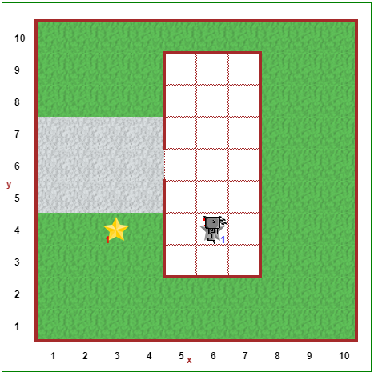

Étape 6: Enregistrez des fonctions dans la bibliothèque¶
- CS20-CP1 Apply various problem-solving strategies to solve programming problems throughout Computer Science 20.
- CS20-CP2 Use common coding techniques to enhance code elegance and troubleshoot errors throughout Computer Science 20.
- CS20-FP3 Construct and utilize functions to create reusable pieces of code.
Didacticiel-Tutorial¶
En plus d’avoir l’option de faire Reeborg tourner à droite, vous l’avez peut-être déjà fait tourner deux fois; en le retournant, je veux dire changer de direction pour que Reeborg retourne à l’endroit d’où il venait. Nous pouvons définir une fonction turn_around () comme ceci:
def turn_around():
turn_left()
turn_left()
Lorsque les programmeurs utilisent une fonction donnée dans différents programmes plutôt que de la redéfinir dans chaque programme écrit, ils les placent dans des programmes spéciaux appelés bibliothèques/libraries et ils s’assurent que leurs autres programmes peuvent utiliser les fonctions qui se trouvent dans la bibliothèque.
Vous allez utiliser la fonction turn_right () beaucoup! Au lieu de la réécrire à chaque fois, vous allez l’écrire une (autre) fois mais cette fois , au lieu de l’écrire dans l’éditeur avec l’onglet Code Python, vous allez cliquer sur l’onglet bibliothèque et vous allez l’écrire là. Oh, et vous devriez aussi définir turn_around () là en plus.

Ensuite, lorsque vous souhaitez utiliser les fonctions définies dans votre bibliothèque, vous devez simplement taper from library import (suivi du nom des fonctions, séparés par des virgules) sur sa propre ligne dans l’éditeur de code Python. Par exemple, si vous avez défini turn_right () dans la bibliothèque, vous pouvez taper à partir de la bibliothèque import turn_right, et vous pourrez maintenant utiliser la fonction turn_right () n’importe où dans votre code.
Si vous enregistrez un grand nombre de fonctions dans la bibliothèque, sachez que vous pouvez utiliser from library import * pour importer toutes les fonctions de la bibliothèque. Le * est appelé un caractère générique (wildcard character), et dans ce cas indique à Python d’importer toutes les fonctions qu’il peut trouver dans la bibliothèque.
Note
Nous utilisons la commande from library import lors de nos explorations avec Reeborg, ce qui vous permet de simplement taper turn_right (). Plus tard dans le cours, nous utiliserons la commande import library, qui vous demandera de taper library.turn_right () pour appeler la fonction.
À ton tour¶
Ouvrez l’étape 6 sur l'environnement Reeborg.
Reeborg doit aller chercher le journal (Le Star Phoenix) qui se trouve devant sa maison. Si vous ne l’avez pas encore fait, définissez les fonctions turn_right () et turn_around () dans l’onglet de la bibliothèque. Utilisez maintenant les fonctions définies dans la bibliothèque pour que Reeborg prenne le journal, revienne dans la maison et pose le journal. Encore une fois, veillez utiliser les commentaires et les espaces vide pour augmenter la lisibilité de votre solution!